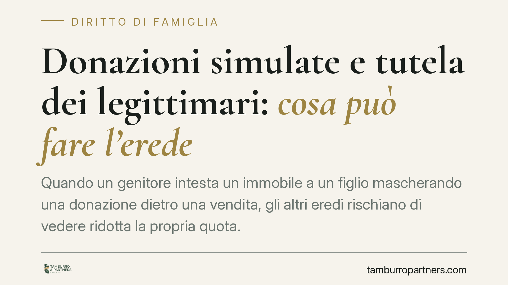

Donazioni simulate e tutela dei legittimari: cosa può fare l'erede
Quando un genitore intesta un immobile a un figlio mascherando una donazione dietro una vendita, gli altri eredi rischiano di vedere ridotta la propria quota. Il tema, tornato d'attualità, tocca la distinzione tra atti solo apparenti e diritti dei familiari più prossimi. Vediamo quali strumenti l'ordinamento riconosce e con quali limiti, soprattutto prima della morte del disponente.

Il contesto: donazioni "mascherate" e diritti dei familiari
È frequente che un trasferimento di ricchezza in famiglia venga formalizzato come compravendita quando in realtà non c'è alcun corrispettivo: si tratta di una donazione dissimulata. Il fenomeno assume rilievo perché la legge riserva ad alcuni familiari — i cosiddetti legittimari — una quota minima del patrimonio del defunto (la "quota di legittima"), che non può essere sacrificata neppure dalla volontà del disponente.
Sono legittimari il coniuge, i figli e, in mancanza di questi, gli ascendenti (i genitori o i nonni). A costoro spetta una porzione dell'eredità calcolata sul valore del patrimonio ricostruito, tenendo conto anche di ciò che il defunto ha donato in vita.
Inquadramento normativo
La simulazione è disciplinata dagli artt. 1414 e seguenti del Codice civile. Quando le parti concludono un contratto ma non vogliono i suoi effetti (simulazione assoluta) oppure ne vogliono altri diversi da quelli dichiarati (simulazione relativa, come la vendita che nasconde una donazione), il contratto simulato non produce effetti tra le parti. L'art. 1417 c.c. regola la prova della simulazione, distinguendo la posizione delle parti da quella dei terzi.
Alla morte del disponente, il legittimario leso può agire con l'azione di riduzione (artt. 553 e seguenti c.c.) per ottenere la reintegrazione della propria quota. Se il bene donato è stato nel frattempo alienato a terzi, entra in gioco l'azione di restituzione contro i terzi acquirenti prevista dall'art. 563 c.c.
Proprio l'art. 563 c.c., nel testo modificato dalla L. 80/2005, ha introdotto al comma 4 un meccanismo di opposizione stragiudiziale alla donazione: il coniuge e i parenti in linea retta del donante possono notificare e trascrivere un atto di opposizione che sospende, nei loro confronti, il decorso del termine ventennale oltre il quale la restituzione contro i terzi non è più esperibile. È l'unico strumento che la legge riconosce espressamente in un momento anteriore all'apertura della successione, ed è di natura conservativa: non accerta nulla, ma tiene aperta la porta al futuro rimedio.
Il nodo controverso: si può agire prima della morte?
Qui sta il punto più delicato. Un'azione di mero accertamento della simulazione promossa dal legittimario mentre il disponente è ancora in vita è tema tuttora discusso in dottrina e giurisprudenza. Prima dell'apertura della successione, infatti, il legittimario è titolare di una semplice aspettativa: non ha ancora alcun diritto attuale sul patrimonio del familiare, che resta libero di disporne. Ne discende un problema di interesse ad agire ex art. 100 c.p.c., requisito senza il quale la domanda non è ammissibile.
La tesi che ammette una tutela di accertamento anticipata resta minoritaria e non consolidata. Eventuali pronunce di merito in tal senso vanno lette con prudenza: sono decisioni di primo grado, prive di valore di precedente vincolante, e non modificano il quadro consolidato secondo cui la protezione piena del legittimario si attiva alla morte del disponente. Chi si trova in questa situazione deve dunque calibrare le proprie mosse tra ciò che è realmente esperibile in vita (essenzialmente l'opposizione ex art. 563, co. 4, c.c.) e ciò che maturerà solo dopo.
Implicazioni pratiche
Per il familiare che teme di essere pretermesso, la distinzione tra i due piani è decisiva:
- In vita del disponente: gli strumenti sono limitati e prevalentemente conservativi. L'opposizione alla donazione serve a non perdere, per decorso del tempo, la possibilità di aggredire in futuro i beni finiti a terzi.
- Dopo l'apertura della successione: si aprono l'azione di riduzione e, se necessario, quella di restituzione, oltre alla possibilità di far accertare la reale natura simulata degli atti compiuti in vita.
Agire d'impulso, in assenza di un diritto attuale, espone al rischio di una pronuncia di inammissibilità e alle relative spese.
Cosa fare in concreto
- Ricostruite la storia patrimoniale: raccogliete gli atti di trasferimento sospetti (vendite tra familiari, intestazioni prive di corrispettivo reale) e ogni documento utile a dimostrarne la natura donativa.
- Valutate l'opposizione ex art. 563, co. 4, c.c.: se siete coniuge o parenti in linea retta del donante, verificate se e quando conviene notificarla e trascriverla per interrompere il termine ventennale.
- Distinguete i tempi dell'azione: non confondete i rimedi esperibili in vita con quelli attivabili solo alla morte del disponente.
- Documentate i flussi di denaro: la prova della simulazione passa spesso da movimenti bancari, quietanze e dichiarazioni; conservate tutto per tempo.
- Verificate la fondatezza prima di agire: prima di intraprendere un giudizio, è opportuna una valutazione tecnica dell'interesse ad agire e dell'esperibilità concreta del rimedio.
---
Contributo informativo a cura di Tamburro & Partners - Avv. Giuseppe Tamburro. Non costituisce parere legale.
Ogni famiglia ha il suo equilibrio.
Separazione, divorzio, affidamento, assegno: se vuoi un confronto riservato su una specifica situazione, scrivi allo studio. Ti rispondiamo entro un giorno lavorativo.